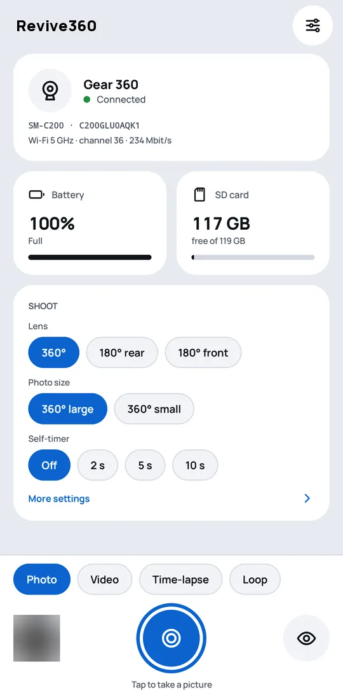
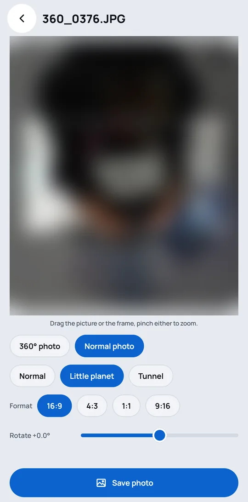
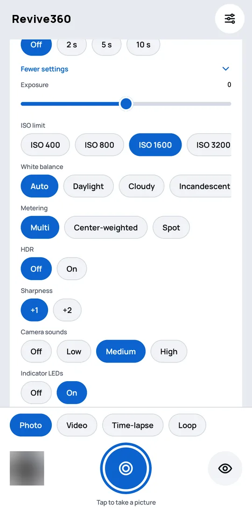
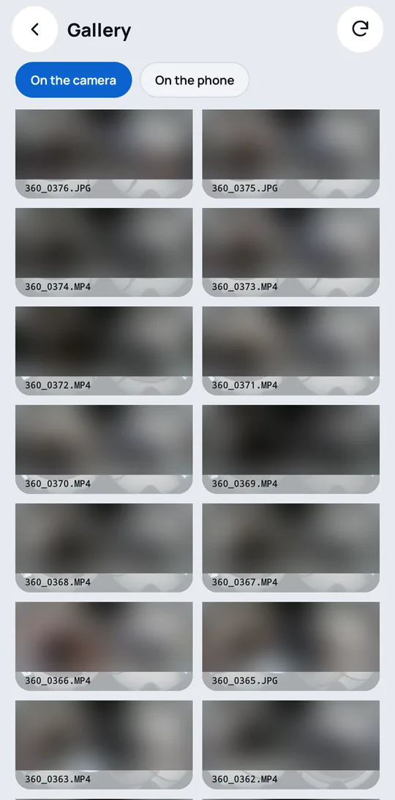
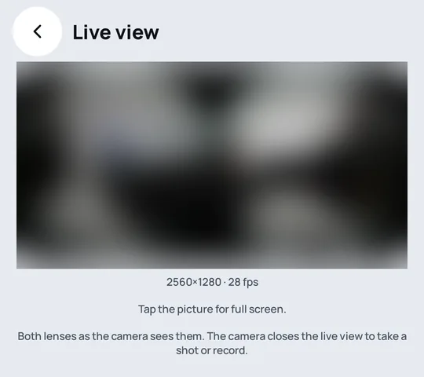

Your Samsung Gear 360 works againRevive360 – for Gear 360
Samsung's Gear 360 apps no longer work on today's phones. Revive360 brings the camera back to life with any Android phone: shoot, see live, change settings and get real 360° photos.
- Android 10 or later, any brand
- No account, no cloud
- No ads


Everything the camera did, back on your phone
One app for shooting, checking and keeping your 360° photos and videos.
Shoot from your phone
Photos, videos, time-lapses and looping videos, with the self-timer if you want to be in the shot.
See it live
See what the camera sees before you shoot.
All the settings
Lens, size, self-timer, exposure, white balance and more, changed from the phone.
Your files on the phone
Copy photos and videos to the phone, or delete them from the camera, one or many at a time.
Real 360° photos
The camera's two lenses joined into one 360° photo that Google Photos and other apps recognise.
Normal photos too
Look around, straighten, pick the frame you like or make a "little planet", and save it as a normal photo.
RAW, which Samsung's app never had
The camera also keeps the sensor data of both lenses, and the app turns it into a DNG for Lightroom and other raw editors, one photo or many at once. For 360° photos in good light.
A look at the app



Simple, private, reversible
Any Android phone
Android 10 or later, of any brand. It does not have to be a Samsung.
Pairs by itself
The phone finds the camera over Bluetooth and sets up the connection. Nothing to type.
Private by design
The phone talks straight to the camera. No account, no cloud, nothing sent to the internet.
Easy on the battery
The camera's Wi-Fi is on only while the app needs it.
Free and open source
No ads, no subscriptions. The code is public under the GNU GPL v3.
Can be undone
Samsung's original camera software can always be put back the same way it was replaced.
Getting started
About half an hour, once. You need the camera, its microSD card, an Android phone and a computer.
Get the app
Install Revive360 for free from Google Play, or download the APK from the latest GitHub release.
Set up the camera
A few commands on the computer prepare the card and tell you what to do on the camera. Follow the install guide.
Pair and shoot
Switch the camera on and tap "Find the camera" in the app. From then on it connects by itself.
Which cameras
| Camera | Works? |
|---|---|
| Gear 360 (2016, SM-C200), firmware C200GLU0AQK1 | Yes |
| Gear 360 (2016, SM-C200), other firmware | Should work, not tested yet |
| Gear 360 (2017, SM-R210) | Not yet |
Questions
Does Revive360 work with an iPhone?
No. Revive360 is an Android app and needs Android 10 or later.
Do I need a Samsung phone?
No. It works with Android phones of any brand.
Which Gear 360 cameras are supported?
The Gear 360 (2016, SM-C200). The Gear 360 (2017, SM-R210) is not supported yet.
Do I have to change the camera's software?
Yes, once: a small add-on is installed on the camera from a computer through its microSD card. The install guide walks you through it, and Samsung's original software can be put back the same way.
Does it need an account or the internet?
No. The phone talks straight to the camera over Bluetooth and the camera's own Wi-Fi. Nothing goes to the internet. See the privacy policy.
Is it free?
Yes. Revive360 is free and open source software under the GNU GPL v3, with no ads.
Is it on Google Play?
Yes. Revive360 is free on Google Play.
Can I install it without Google Play?
Yes. Every version is also on the project's GitHub releases as an APK: download it on the phone and open it. The Google Play and GitHub versions are signed differently: to switch from one to the other, uninstall the app first.
Changing the camera's software is at your own risk. The install guide explains every step, including how to go back to Samsung's original software.